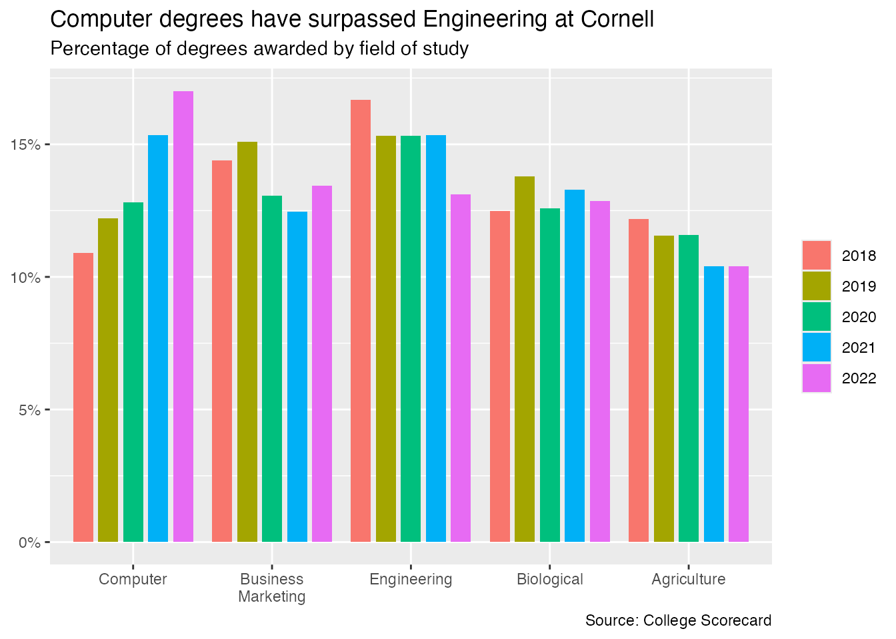

library(tidyverse)
library(scales)AE 08: A custom {ggplot2} theme for Cornell
Cornell University brand identity
Organizational branding is a set of visual and verbal elements that represent an organization. It is “how your audience perceives you” and created through “many elements, including your name, logo, tagline, website, colors, collateral, messaging, positioning, graphic elements, social media, and other outreach platforms.”1
Cornell University maintains detailed guidelines for its brand identity. The design center provides explicit instructions for using the Cornell logo, color palette, and typography, as well as downloadable materials such as a PowerPoint template.
Suppose we wish to create a series of statistical charts to be used in a Cornell Bowers CIS2 presentation, but we want to ensure they are both reproducible as well as consistent with the university’s branding. We can use the {ggplot2} package to create a custom theme that adheres to the Cornell brand identity.
Basic bar chart
Let’s create a basic chart to assist us with generating an appropriate {ggplot2} theme. Here we will use graduation trends from Cornell University from College Scorecard. In this instance, we will use a bar chart to visualize the percentage of degrees awarded for three fields of study from 2018-22.
cornell_degrees <- read_csv("data/cornell-degrees.csv")
cornell_degrees# A tibble: 135 × 3
field_of_study year pct
<chr> <dbl> <dbl>
1 Computer 1996 0.0421
2 Computer 1997 0.0497
3 Computer 1998 0.0581
4 Computer 1999 0.0716
5 Computer 2000 0.0684
6 Computer 2001 0.0859
7 Computer 2002 0.0745
8 Computer 2003 0.0463
9 Computer 2004 0.0327
10 Computer 2005 0.032
# ℹ 125 more rowscornell_degrees_plot <- cornell_degrees |>
filter(year >= 2018) |>
# prep data for specific bar plot
mutate(
year = factor(year),
field_of_study = fct_reorder2(.f = field_of_study, .x = year, .y = pct)
) |>
ggplot(mapping = aes(x = field_of_study, y = pct, fill = year)) +
# ensure padding between dodged bar segments
geom_col(position = position_dodge2(padding = 0.2)) +
scale_x_discrete(labels = label_wrap(width = 15)) +
# format y axis labels
scale_y_continuous(labels = label_percent()) +
# optimal labels for chart
labs(
title = "Computer degrees have surpassed Engineering at Cornell",
subtitle = "Percentage of degrees awarded by field of study",
x = NULL,
y = NULL,
fill = NULL,
caption = "Source: College Scorecard"
)
cornell_degrees_plot
Develop a custom Cornell theme for {ggplot2}
Based on Cornell’s brand identity, we want to ensure our theme adheres to the following requirements:
In addition, we want to
Note this final requirement is not part of the theme() as defined by {ggplot2}, but requires us to modify the appropriate scale for the chart.
Your turn: Implement a Cornell-branded theme for {ggplot2} that meets the requirements outlined above.
Install the required font files first!
In order to use the Spectral font, it needs to be installed on your system. You have two choices:
- If you are running R on your personal computer, download Spectral and install the font as you would any other font on your computer. Once installed, restart your R session and you should be able to use the font.
- Install the font for this project only using
library(systemfonts)
require_font("Spectral", dir = "fonts")
Tip
Replace the TODO placeholders with the appropriate values. Use the {ggplot2} theme() documentation as a reference.
# cornell color palette - accent colors
cornell_pal <- c("#006699", "#6EB43F", "#F8981D", "#EF4035", "#073949")
cornell_degrees_plot +
# change color palette
scale_fill_TODO(values = cornell_pal) +
# use theme_minimal() as a starting point
theme_minimal(
base_family = "TODO",
base_size = TODO
) +
theme(
plot.title.position = "TODO",
plot.title = element_text(hjust = TODO),
plot.subtitle = element_text(hjust = TODO),
legend.position = "TODO",
panel.grid.major.x = TODO,
panel.grid.minor.x = TODO,
panel.grid.major.y = element_line(TODO),
panel.grid.minor.y = element_line(TODO),
axis.text = element_text(TODO),
legend.text = element_text(TODO)
)Error in scale_fill_TODO(values = cornell_pal): could not find function "scale_fill_TODO"Turn into a reusable function
Demo: Convert your Cornell theme into a reusable theme_cornell() function and test it on two different charts.
# define theme as its own function
theme_cornell <- function(
TODO
) {
TODO
}# existing bar chart
cornell_degrees_plot +
scale_fill_TODO(values = cornell_pal) +
theme_cornell()Error in scale_fill_TODO(values = cornell_pal): could not find function "scale_fill_TODO"# line graph
cornell_degrees |>
mutate(
field_of_study = fct_reorder2(
.f = field_of_study,
.x = year,
.y = pct
)
) |>
ggplot(aes(x = year, y = pct, color = field_of_study)) +
geom_point() +
geom_line() +
scale_x_continuous(limits = c(1996, 2022), breaks = seq(1996, 2020, 4)) +
scale_color_manual(values = cornell_pal) +
scale_y_continuous(labels = label_percent()) +
labs(
x = "Graduation year",
y = "Percent of degrees awarded",
color = "Field of study",
title = "Cornell University degrees awarded from 1996-2022",
subtitle = "Only the top five fields as of 2022",
caption = "Source: Department of Education\nhttps://collegescorecard.ed.gov/"
) +
theme_cornell() +
# still makes sense to leave the legend on the right
theme(legend.position = "right")Error in theme_cornell(): argument "TODO" is missing, with no defaultFootnotes
According to the Cornell Bowers CIS brand guidelines, always refer to it as Cornell Bowers CIS or the more formal Cornell Ann S. Bowers College of Computing and Information Science or Cornell Bowers Computing and Information Science, never just CIS.↩︎